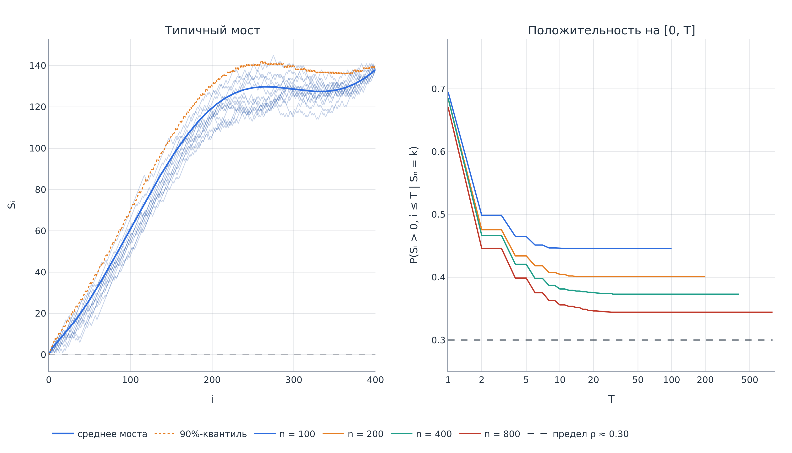
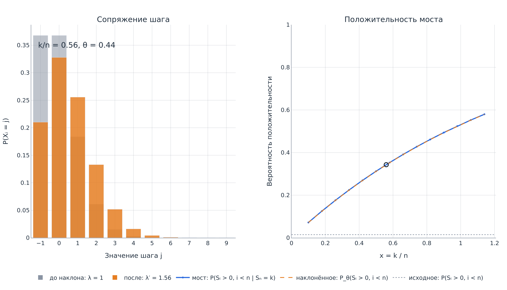
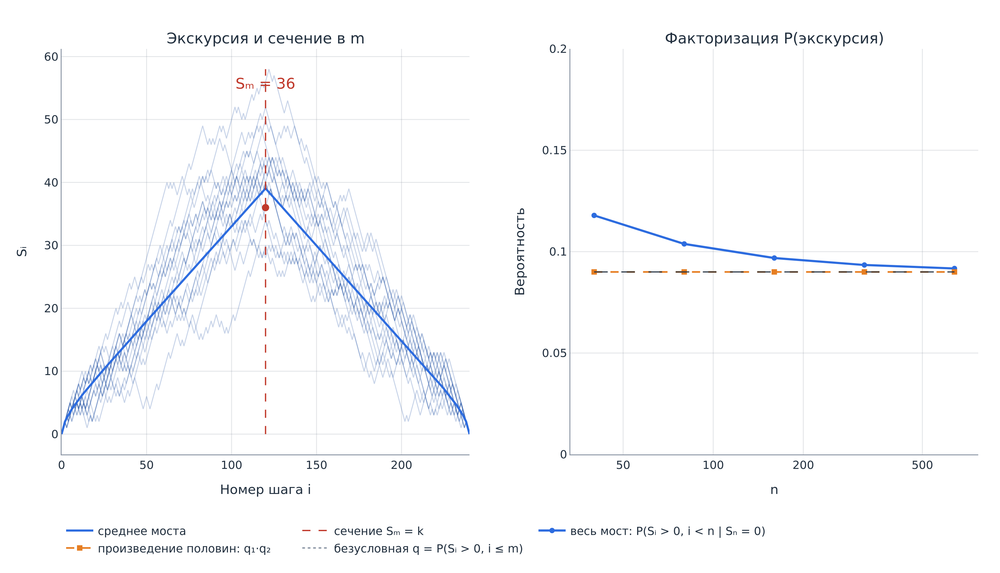
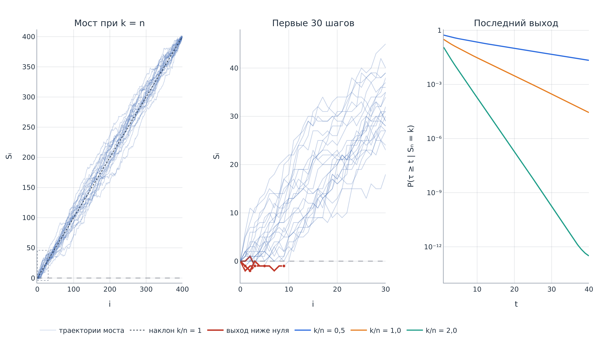
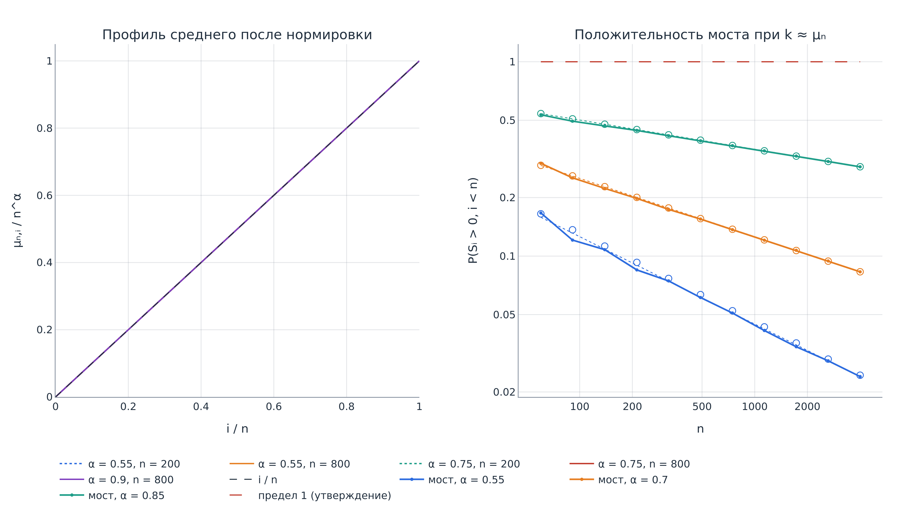
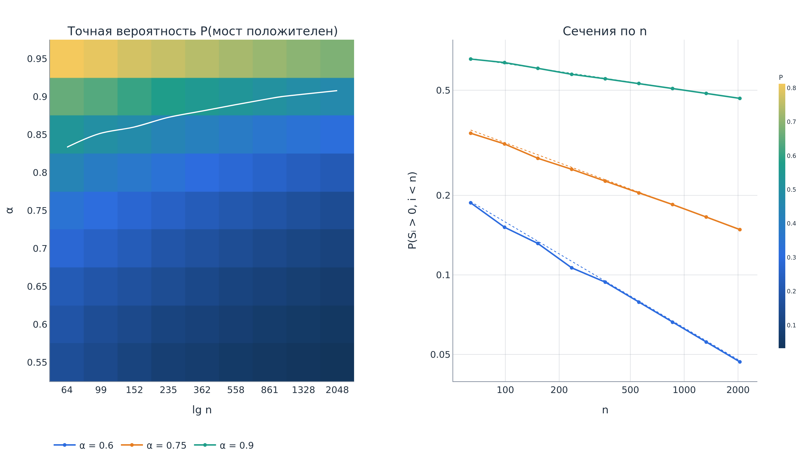
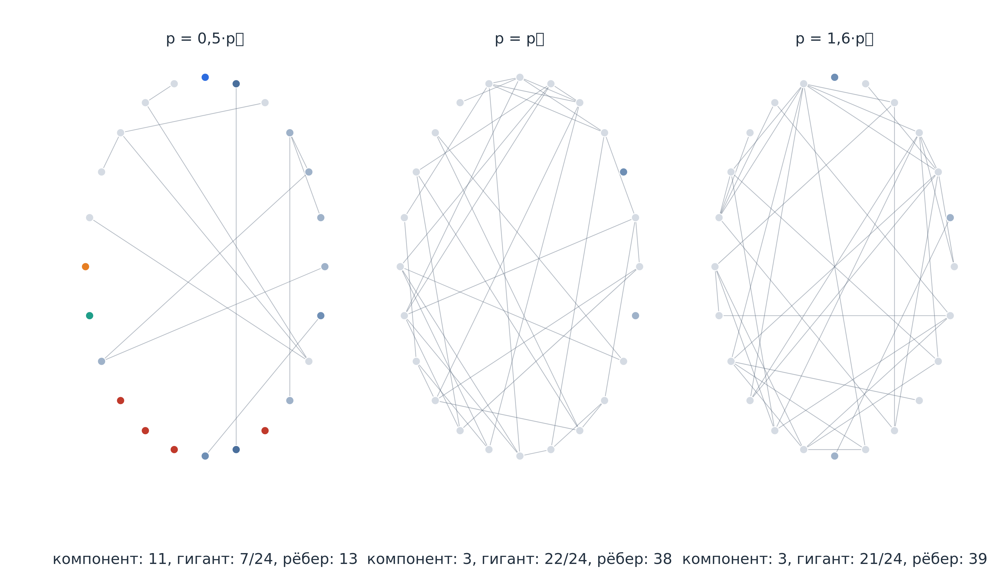
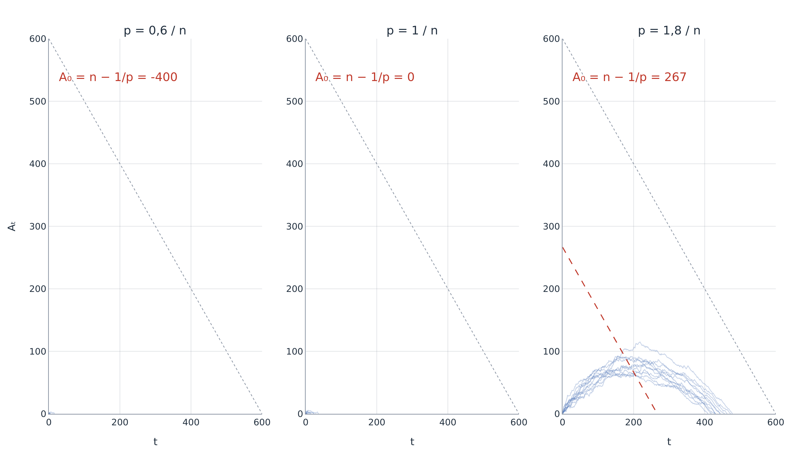
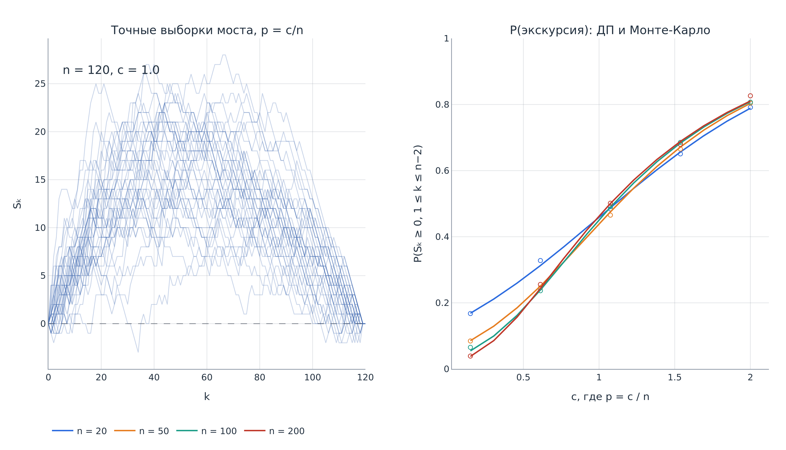
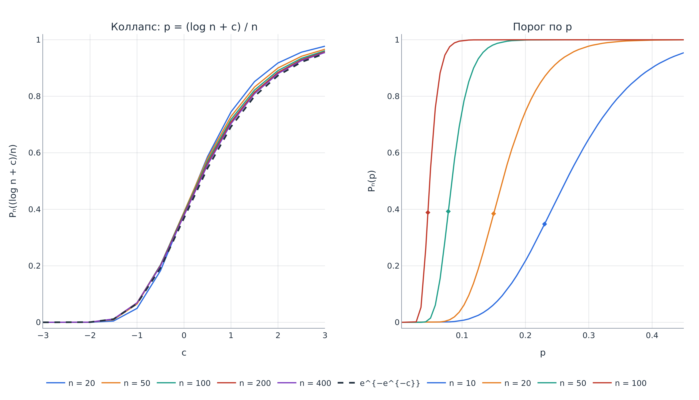

Мосты и экскурсии: картинки к трём статьям
Условная положительность неоднородного блуждания со сносом и её приложение к связности случайного графа. Десять статических фигур для статьи, постера и блога плюс три интерактивные страницы, где параметры можно двигать ползунками.
Три сюжета. Структура моста: что делает типичная траектория при известном конце, как работает наклон Крамера и почему экскурсия факторизуется по среднему сечению. Сублинейный снос: снос $\mu_{n,i} \asymp i\,n^{\alpha-1}$ растёт, но пошагово стремится к нулю — как это меняет вероятность остаться выше барьера. Эрдёш—Реньи: обход графа как блуждание, пуассоновский мост и точная вероятность связности с пределом $e^{-e^{-c}}$.
Каталог статических фигур
Нажмите на картинку, чтобы открыть её в полном размере. В каталоге
показан пресет blog; в out/ для каждой
фигуры лежат PDF, PNG (300 dpi) и SVG в пресетах
paper_wide, poster и blog.
Структура моста · rec_struct


Типичный мост при неоднородном сносе
Ансамбль точных выборок моста $S_n=k$; полоса — поточечные квантили 5–95 %. Справа — сходимость условной вероятности положительности на растущем начальном участке к безусловной.


Наклон Крамера: мост как наклонённое блуждание
Шаг $X_i=\mathrm{Poisson}(1)-1$. Слева — как сопряжение $\lambda\to\lambda e^\theta$ меняет распределение шага; справа — условная положительность моста и безусловная положительность наклонённого блуждания. Равенство предельное: зазор между кривыми убывает как $O(n^{-1/2})$.


Экскурсия: факторизация по среднему сечению
Двухблочный снос $(+c,-c)$ даёт траекторию-«горб». Слева — выборки моста и типичное сечение $S_m=k$; справа — вероятность экскурсии для всего моста против произведения половин $q_1q_2$ и предела $q^2$.


Выход ниже нуля — в начале траектории
Шаг $X_i=\mathrm{Poisson}(1)-2$, конец $k=\theta n$. Условный мост растёт со скоростью $\theta$; если он и уходит ниже нуля, то только в первые шаги. Справа — точная $\mathbb{P}(\tau\ge t\mid S_n=k)$, где $\tau$ — последний момент ниже нуля: хвост убывает экспоненциально.
Сублинейный снос · simpler_drift


Масштабирование сублинейного сноса
Профили $\mu_{n,i}=c\,i\,n^{\alpha-1}$ после деления на $n^\alpha$ ложатся на прямую $i/n$. Справа — точная вероятность положительности моста при $k\approx\mu_{n,n}$ и её наклон $n^{\alpha-1}$.


Карта точной положительности по $(\alpha,n)$
Каждая клетка — отдельная динамическая программа. Вероятность убывает по $n$ при фиксированном $\alpha$; линии уровня наклона $n^{\alpha-1}$ видны как параллельные диагонали. Справа — сечения.
Эрдёш—Реньи · erdos_renyi_explainer


Галерея $G(n,p)$ вокруг порога
Три режима: $0{,}5\,p_c$ (мелкие компоненты), $p_c$ (гигантская компонента уже есть, связности ещё нет) и $1{,}6\,p_c$ (граф почти наверняка связен).


Фронт обхода и линия нулевого сноса
$A_{t+1}=A_t-1+\operatorname{Bin}(n-t-A_t,p)$ в коридоре $0\le A_t\le n-t$. Линия $a=n-t-1/p$ отделяет вымирание $(c<1)$ от роста гигантской компоненты $(c>1)$.


Пуассоновский мост и вероятность экскурсии
Точные выборки моста одним вызовом multinomial при $\lambda_t=q(1-p)^{t-1}$. Справа — точная вероятность экскурсии из ДП по пуассоновским весам против Монте-Карло.


Связность и предел $e^{-e^{-c}}$
Точная $P_n(p)$ для растущих $n$ при $p=(\log n+c)/n$ коллапсирует на $e^{-e^{-c}}$; ромбы — точка $p_c=\log n/n$ на оси $p$.
Интерактивные опыты
Те же формулы, но посчитанные в браузере на JavaScript: ползунки меняют $n$, снос, барьер и число выборок, а картинка пересчитывается без перезагрузки. Генератор случайных чисел детерминированный, поэтому при одном наборе параметров результат воспроизводится.
rec_structСтруктура моста
Типичный мост с барьером, наклон Крамера на пуассоновском шаге, факторизация экскурсии и выход ниже нуля при большом уклоне. Четыре опыта, все значения точные.
simpler_driftСублинейный снос
Профиль среднего, свободные траектории, условная и безусловная положительность, карта точных вероятностей по $(\alpha,n)$.
erdos_renyiЭрдёш—Реньи
Галерея графов, фронт обхода, пуассоновский мост и точная связность с коллапсом на $e^{-e^{-c}}$.
Что именно считается
Везде, где это возможно, вместо Монте-Карло используется точная динамика по $(i,h)$: распределение моста хранится как матрица весов, строки нормируются на максимум, а множители копятся в логарифме — иначе $2^{-n}$ уходит в машинный ноль. Поэтому вероятности вида $10^{-25}$ на рис. 9 не «шумят», а являются точными значениями.
Для графа пуассонизация даёт
$\lambda_t=q(1-p)^{t-1}$ и полиномиальный мост; вероятность экскурсии —
та же динамика по пуассоновским весам $w_t(j)=\lambda_t^j/j!$, а
связность равна
$\left(1-(1-p)^{n-1}\right)^{n-1}\mathbb{P}(\text{экскурсия})$.
В опыте с наклоном Крамера шаг $X_i=\mathrm{Poisson}(1)-1$: та же
динамика по $(i,h)$, только вместо двух слагаемых — свёртка с
пуассоновским ядром (хвост отброшен при массе $<10^{-15}$).
Ядро на Python — common/walks.py,
common/poisson.py и common/erdos.py;
их точные JavaScript-аналоги для сайта — docs/assets/walks.js,
poisson_walks.js и erdos.js.
Совпадение Python и JS проверено до $10^{-12}$ по абсолютной ошибке.
Формулировки теорем и все константы — в статьях репозитория
(rec_struct, simpler_drift,
erdos_renyi_explainer); здесь они не пересказываются
дословно, а показываются численно.
Файлы и сборка
figures/fig1…fig10*.py— по одному скрипту на фигуру, у каждого естьbuild().common/— точные ядра, оформление и пресеты размеров.out/— готовые PDF, PNG (300 dpi) и SVG в трёх пресетах.make_all.py— пересобрать всё и прогнать проверки;qa.py— проверки без визуального просмотра.docs/— этот сайт; публикуется из папкиdocs/веткиmain.
cd viz python -m venv .venv && . .venv/bin/activate pip install -r requirements.txt python make_all.py # все фигуры + QA python make_all.py fig3 fig9 # только выбранные
Зависимости зафиксированы: plotly==5.24.1 и
kaleido==0.2.1 (собственный headless-браузер, системный
Chrome не нужен), а также numpy, scipy,
pillow.